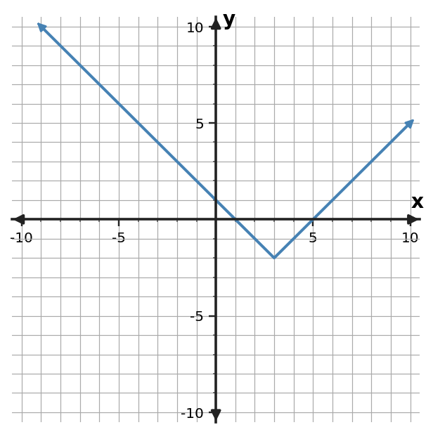
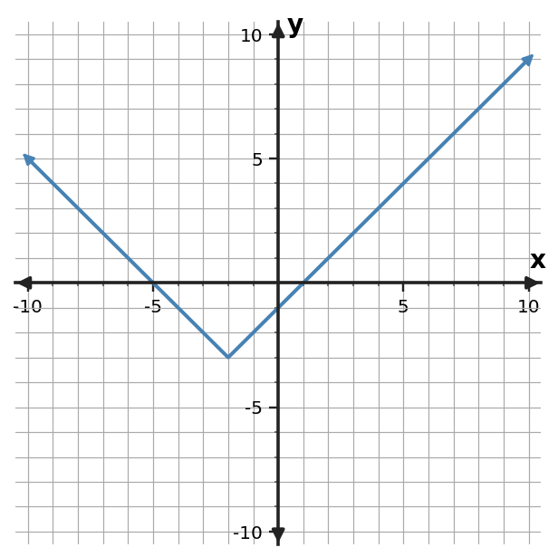

For $y=2|x+3|-1$, state the vertex and describe the rate of change on each side of the vertex.
Use the symmetric table to locate the vertex and identify an absolute-value rule.
| $x$ | -1 | 0 | 1 | 2 | 3 |
|---|---|---|---|---|---|
| $y$ | 6 | 3 | 0 | 3 | 6 |
For $f(x)=\begin{cases}3x-1,&x\lt 1\\ x+4,&x\ge 1\end{cases}$, find $f(-2)$ and identify which rule applies.
A parking garage charges 4 dollars plus 3 dollars per hour for the first 4 hours, then 16 dollars plus 2 dollars per hour beyond 4 hours. Write a piecewise cost rule for $h\ge0$.
A model gives distance from a trailhead as $d(t)=|6t-24|$ for a 8-hour trip. State a reasonable domain and explain why the algebraic rule should not be used for all real $t$.
Use the graph to state the vertex and x-intercepts of the absolute-value function. Then use symmetry to check the intercept pair.

Find the two numbers that are 6 units from -2 by solving $|x+2|=6$.
Explain how $y=|x-4|$ can be described with two linear rules on either side of $x=4$. Include the slopes and meeting point.
For $y=|x+2|-3$, state an interval where the function is decreasing and an interval where it is increasing.
A room target temperature is 80°F. Write an expression for the number of degrees a temperature $T$ is away from the target.
For $y=-3|x-3|+1$, state the vertex and describe the rate of change on each side of the vertex.
Use the symmetric table to locate the vertex and identify an absolute-value rule with scale factor 1.5.
| $x$ | 2 | 3 | 4 | 5 | 6 |
|---|---|---|---|---|---|
| $y$ | 0 | -1.5 | -3 | -1.5 | 0 |
For $f(x)=\begin{cases}x+5,&x\lt 3\\-2x+6,&x\ge 3\end{cases}$, find $f(3)$ and identify which rule applies.
A bike-share ride costs 5 dollars plus 4 dollars per hour for the first 3 hours, then 17 dollars plus 2 dollars for each additional hour. Write a piecewise rule for $h\ge0$.
A model gives distance from a trailhead as $d(t)=|2.5t-12.5|$ for a 6-hour trip. State a reasonable domain and explain why the algebraic rule should not be used for all real $t$.
Use the graph to state the vertex and x-intercepts of the absolute-value function. Then identify one interval where outputs decrease.

Find the two numbers that are 3 units from -4 by solving $|x+4|=3$.
Explain how $y=0.5|x+3|$ can be described with two linear rules on either side of $x=-3$. Include the slopes and meeting point.
The outputs for consecutive integer inputs are $3,9,27,81$. Identify the relationship as exponential and state the ratio.
Explain why $y=4(1.3)^x$ is exponential and whether it represents growth or decay.
A bacteria count is multiplied by 1.4 each hour. Identify the function family and interpret the factor 1.4.
Solve $(x-6)(x+1)=0$ and interpret the solutions as x-intercepts of the related parabola.
Factor and solve $x^2-5x-14=0$.
A height model factors as $h(t)=-4(t-1)(t-7)$. At what times is the height 0, and which times are meaningful if $t$ is seconds after launch?
For $y=2|x+3|-1$, state the vertex and describe the rate of change on each side of the vertex.
Vertex $(-3,-1)$; the left-hand slope is -2 and the right-hand slope is 2.
Use the symmetric table to locate the vertex and identify an absolute-value rule.
| $x$ | -1 | 0 | 1 | 2 | 3 |
|---|---|---|---|---|---|
| $y$ | 6 | 3 | 0 | 3 | 6 |
Vertex $(1,0)$; one rule is $y=3|x-1|$.
For $f(x)=\begin{cases}3x-1,&x\lt 1\\ x+4,&x\ge 1\end{cases}$, find $f(-2)$ and identify which rule applies.
$f(-2)=-7$; use the first rule because $-2\lt 1$.
A parking garage charges 4 dollars plus 3 dollars per hour for the first 4 hours, then 16 dollars plus 2 dollars per hour beyond 4 hours. Write a piecewise cost rule for $h\ge0$.
$C(h)=4+3h$ for $0\le h\le4$, and $C(h)=16+2(h-4)$ for $h\gt 4$.
A model gives distance from a trailhead as $d(t)=|6t-24|$ for a 8-hour trip. State a reasonable domain and explain why the algebraic rule should not be used for all real $t$.
A reasonable domain is $0\le t\le 8$. Times outside the stated trip are not part of the situation.
Use the graph to state the vertex and x-intercepts of the absolute-value function. Then use symmetry to check the intercept pair.
Vertex $(3,-2)$; x-intercepts $(1,0)$ and $(5,0)$. The intercepts are symmetric because their midpoint is $x=3$.
Find the two numbers that are 6 units from -2 by solving $|x+2|=6$.
$x=4$ or $x=-8$.
Explain how $y=|x-4|$ can be described with two linear rules on either side of $x=4$. Include the slopes and meeting point.
$y=-(x-4)$ for $x\lt 4$ and $y=x-4$ for $x\ge 4$; the rays meet at $(4,0)$ with slopes -1 and 1.
For $y=|x+2|-3$, state an interval where the function is decreasing and an interval where it is increasing.
Decreasing for $x\lt -2$; increasing for $x\gt -2$, with the turning point at $x=-2$.
A room target temperature is 80°F. Write an expression for the number of degrees a temperature $T$ is away from the target.
$|T-80|$.
For $y=-3|x-3|+1$, state the vertex and describe the rate of change on each side of the vertex.
Vertex $(3,1)$; the left-hand slope is 3 and the right-hand slope is -3.
Use the symmetric table to locate the vertex and identify an absolute-value rule with scale factor 1.5.
| $x$ | 2 | 3 | 4 | 5 | 6 |
|---|---|---|---|---|---|
| $y$ | 0 | -1.5 | -3 | -1.5 | 0 |
Vertex $(4,-3)$; one rule is $y=1.5|x-4|-3$.
For $f(x)=\begin{cases}x+5,&x\lt 3\\-2x+6,&x\ge 3\end{cases}$, find $f(3)$ and identify which rule applies.
$f(3)=0$; use the second rule because 3 >= 3.
A bike-share ride costs 5 dollars plus 4 dollars per hour for the first 3 hours, then 17 dollars plus 2 dollars for each additional hour. Write a piecewise rule for $h\ge0$.
$C(h)=5+4h$ for $0\le h\le3$, and $C(h)=17+2(h-3)$ for $h\gt 3$.
A model gives distance from a trailhead as $d(t)=|2.5t-12.5|$ for a 6-hour trip. State a reasonable domain and explain why the algebraic rule should not be used for all real $t$.
A reasonable domain is $0\le t\le 6$. Times outside the stated trip are not part of the situation.
Use the graph to state the vertex and x-intercepts of the absolute-value function. Then identify one interval where outputs decrease.
Vertex $(-2,-3)$; x-intercepts $(-5,0)$ and $(1,0)$. Outputs decrease for $x\lt-2$ (equivalently on $(-\infty,-2]$).
Find the two numbers that are 3 units from -4 by solving $|x+4|=3$.
$x=-7$ or $x=-1$.
Explain how $y=0.5|x+3|$ can be described with two linear rules on either side of $x=-3$. Include the slopes and meeting point.
$y=-0.5(x+3)$ for $x\lt -3$ and $y=0.5(x+3)$ for $x\ge -3$; the rays meet at $(-3,0)$ with slopes -0.5 and 0.5.
The outputs for consecutive integer inputs are $3,9,27,81$. Identify the relationship as exponential and state the ratio.
Exponential growth with constant ratio 3.
Explain why $y=4(1.3)^x$ is exponential and whether it represents growth or decay.
The variable is in the exponent and the base is 1.3; since $1.3\gt 1$, it is growth.
A bacteria count is multiplied by 1.4 each hour. Identify the function family and interpret the factor 1.4.
Exponential growth; the amount becomes 140% of the previous amount each hour, a 40% increase.
Solve $(x-6)(x+1)=0$ and interpret the solutions as x-intercepts of the related parabola.
$x=6$ and $x=-1$; the graph has x-intercepts $(6,0)$ and $(-1,0)$.
Factor and solve $x^2-5x-14=0$.
$(x-7)(x+2)=0$, so $x=7,-2$.
A height model factors as $h(t)=-4(t-1)(t-7)$. At what times is the height 0, and which times are meaningful if $t$ is seconds after launch?
The zeros are $t=1$ and $t=7$ seconds; both are nonnegative and meaningful within a modeled interval that includes them.